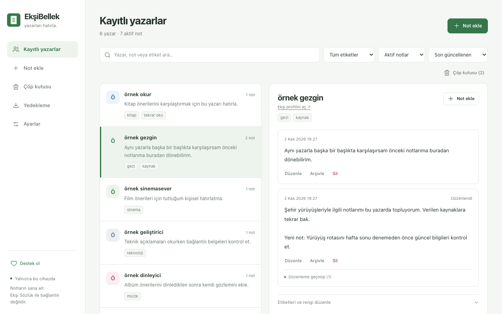

Okurken not al.
Yazar adının başındaki düğme, notlarını bir tıkla açar. Etiket, renk ve kaynak ekleyebilirsin.
Bir yazara not bırak. Başka bir başlıkta yeniden karşılaştığında, kullanıcı adının başındaki küçük düğmeden hatırla.
Chrome Web Store başvurusu hazırlanıyor. ZIP kurulum adımları GitHub sayfasında.

Yazar adının başındaki düğme, notlarını bir tıkla açar. Etiket, renk ve kaynak ekleyebilirsin.
Notların Chrome profilinde kalır. Hesap, reklam veya notlarını alan bir sunucu yoktur.
Geçmiş, arşiv, çöp kutusu ve JSON yedekleriyle kayıtlarını sen yönetirsin.
Normal tarayıcı kapatma/açmada notların korunur. Eklentiyi kaldırmak veya profili silmek yerel kayıtları siler; düzenli JSON yedeği al. Paketlenmemiş kurulumdan mağaza sürümüne geçerken de JSON dışa/içe aktarma kullan.
Verilerin nasıl tutulduğunu oku ↗